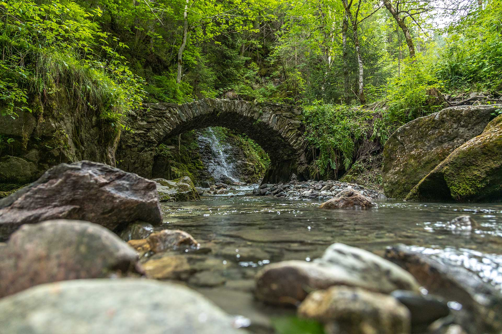

Cascade de la Belle au bois

Description
Cette promenade bucolique et familiale combine la beauté naturelle du site avec des éléments d'intérêt géologique et historique.
Le parcours traverse des chemins herbeux, des sentiers en lacets et offre une expérience rafraîchissante dans un cadre naturel magnifique.
Points d'intérêt
Croix de St Michel
Notre Dame de Nazareth et Notre Dame des Vertus (avec coupole byzantine)
Oratoire des Adieux
Creux St Jean avec statue de Saint Jean Baptiste
Cascade de la Belle au Bois
Petit pont de pierres et oratoire dédié à Saint-Jean
Vieux pont lorrain
Fontaine entre l'Église et l'ancien cimetière
Détail du trajet
Départ de la place du village de Megève
Suivre la rue Charles Feige jusqu'à la place de la Résistance
Prendre le chemin du Calvaire face au parking souterrain du Casino
Monter jusqu'à la Croix St Michel
Continuer vers Notre Dame de Nazareth et l'oratoire des Adieux
Prendre le chemin herbeux à droite du restaurant Le Refuge du Calvaire
Descendre vers le Creux St Jean
Suivre le chemin en lacets jusqu'à la cascade et l'oratoire
Continuer jusqu'au "chemin du Maz"
Option : remonter à gauche pendant 25 min pour voir la cascade de la Belle au Bois (chemin délicat)
Redescendre vers le centre du village
Passer par le vieux pont lorrain près du Bar St Paul
Retour à la place du village en passant par la fontaine et l'Église/li>
Itinéraire
Retour à la liste des randonnées